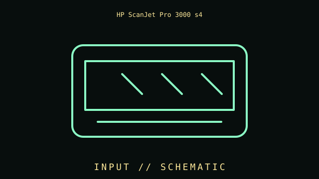

[ INDIVIDUAL COMPONENT // INPUT DEVICES ]
HP ScanJet Pro 3000 s4
Duplex USB 3.0 document scanner with 50-sheet ADF, 600 dpi optical resolution, and 40 ppm class speed. This entry identifies this product generation and distinguishes important interface and revision differences.

MODEL IDENTIFICATION: Check the label for the complete model, revision, regional SKU, accessories, and current manufacturer documentation before installation.
Specifications
| Catalog subcategory | Imaging and audio-capture peripherals |
|---|---|
| Catalog identity | HP ScanJet Pro 3000 s4 |
| Era / family | Compact upright duplex document scanner |
| Product-specific features | Sheet-fed duplex scanner rated up to 40 ppm / 80 ipm at 300 dpi under stated conditions; 50-sheet ADF; 600 dpi optical resolution; long-document capacity depends on mode. |
| Interface | USB 3.0 host interface with external power. This model is a local USB scanner, not a Wi-Fi/network device. |
| Compatibility guidance | Use HP Scan software and the model-specific supported OS driver for OCR, profiles, and duplex workflows. Check the current HP support package for the target operating system; USB enumeration alone does not guarantee advanced software features. |
| Variants and service note | The 3000 s4 is an ADF sheet-feed document scanner, not a flatbed or film scanner. Speed varies with original, settings, and host; inspect rollers and feed path for wear. |
Installation & compatibility checks
- Record the exact model/revision, interface mode, receiver or cable identity, firmware, driver version, and supported host before testing.
- Check connector, power, protocol, OS/driver, and application support separately; physical connector fit alone does not establish feature compatibility.
- For wireless models, preserve original receivers and pairing data. Test wired and radio modes independently where both are provided.
- Do not infer performance from manufacturer maximums alone; note settings, application, host, and measurement method for measured results.
Model notes
The 3000 s4 is an ADF sheet-feed document scanner, not a flatbed or film scanner. Speed varies with original, settings, and host; inspect rollers and feed path for wear.
Use HP Scan software and the model-specific supported OS driver for OCR, profiles, and duplex workflows. Check the current HP support package for the target operating system; USB enumeration alone does not guarantee advanced software features.
Sources & further reading
- HP — ScanJet Pro 3000 s4 manuals and setup guidesProduct reference; confirm exact variant and regional SKU.
- HP — ScanJet Pro 3000 s4 specification sheet (PDF)Support reference for drivers, manuals, and revision-specific guidance.
Manufacturer model references are authoritative for exact revisions and regional variants. Specifications can differ by package, firmware, region, and driver generation.